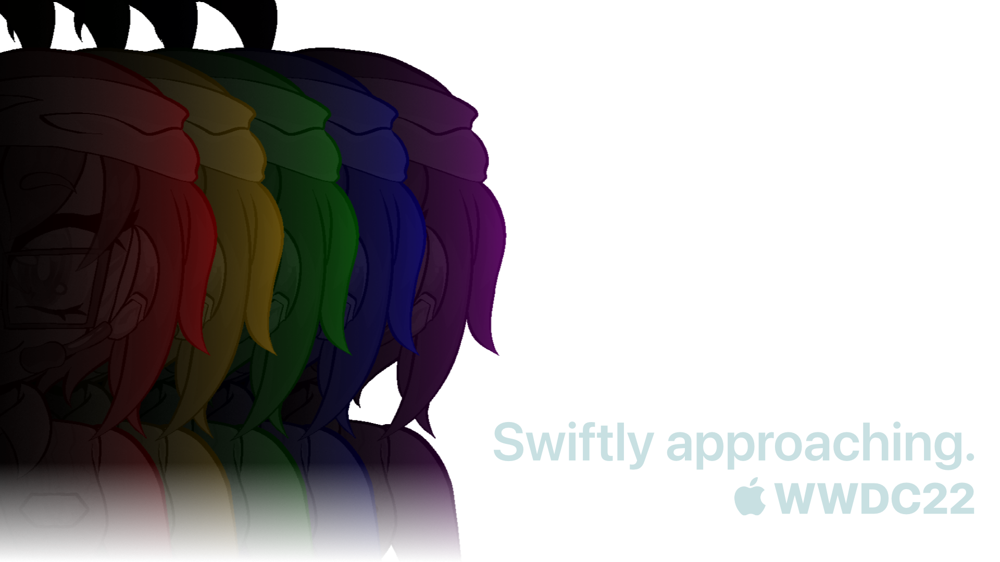

KODA's WWDC Corner
Hello hello, kilobytes! Welcome to my little private corner of the Jukebox! I snuck into the server host and nestled in here to breathe for a bit. But since I'm here, and I've got nothing better to do...I figured I'd talk about that new WWDC thing. It'll be fun!
I'll be covering the WWDC keynote live on Twitch, exploring the developer betas of iOS and macOS on YouTube, and doing a bit of writing to put up here, so check back during the week of WWDC!
